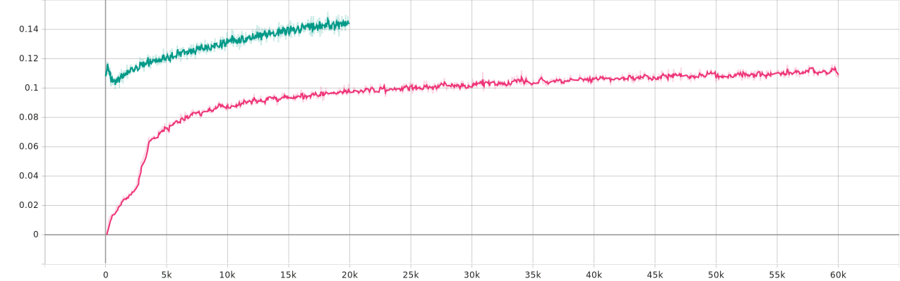

SyncSpeech: Low-Latency and Efficient Text-to-Speech based on
Temporal Masked Transformer
[Paper]
[Code]
Anonymous authors
Abstract: Current text-to-speech (TTS) models face a persistent limitation: autoregressive (AR) models suffer from low generation efficiency, while modern non-autoregressive (NAR) models experience high latency due to their unordered temporal nature. To bridge this divide, we introduce SyncSpeech, an efficient and low-latency TTS model based on the proposed Temporal Mask Transformer (TMT) paradigm. TMT unifies the temporal ordering of AR generation with the parallel decoding of NAR models within a single paradigm. Specifically, a two-stage training strategy with tailored sequence construction is designed for TMT to handle streaming text input. During inference, SyncSpeech achieves high efficiency by decoding all speech tokens corresponding to each newly arrived text token in a single step, and low latency by beginning to generate speech immediately upon receiving the second text token. Evaluations show that SyncSpeech maintains speech quality comparable to state-of-the-art TTS models, while reducing first-packet latency by a factor of 5.8 and improving the real-time factor by a factor of 8.8.

Zero-shot In-context Learning
| Speech Prompt | Text | CosyVoice2 | SyncSpeech |
|---|---|---|---|
| 在这种时候, 他能睡一天，把苦恼交给了梦。 | |||
| 我不敢走进去，感觉那里有东西在等着我，怎么办。 | |||
| 泰勒维尔是一个位于美国伊利诺伊州克里斯蒂安县的城市。 | |||
| 今天买了个折叠椅，坐在阳台上晒太阳，风吹过来，忽然觉得自己像是被世界温柔拥抱了一下。 |
LibriSpeech Test Clean
| Text | Speaker Prompt | CosyVoice
FPL-A:0.22, FPL-L:0.93, RTF:0.45 |
CosyVoice2
FPL-A:0.22, FPL-L:0.35, RTF:0.45 |
SyncSpeech
FPL-A:0.04, FPL-L:0.09, RTF:0.05 |
|---|---|---|---|---|
| I will show you what a good job I did," and she went to a tall cupboard and threw open the doors. | ||||
| Costly entertainments, such as the potlatch or the ball, are peculiarly adapted to serve this end. | ||||
| Whoever, therefore, is ambitious of distinction in this way ought to be prepared for disappointment. | ||||
| To relieve her from both, he laid his hand with force upon his heart, and said, "Do you believe me?" | ||||
| Patsy and Beth supported their cousin loyally and assisted in the preparations. | ||||
| Her manner was neither independent nor assertive, but rather one of well bred composure and calm reliance. | ||||
| "Yes; the character which your royal highness assumed is in perfect harmony with your own." | ||||
| The military force, partly rabble, partly organized, had meanwhile moved into the town." |
Speech Token Accuracy curves of two-stage training and single-stage training
The accuracy curve of Speech tokens during the training phase, where the green line represents the two-stage training process and the pink line represents the one-stage training process. It is evident that two-stage training achieves significantly higher training efficiency and accuracy compared to one-stage training.